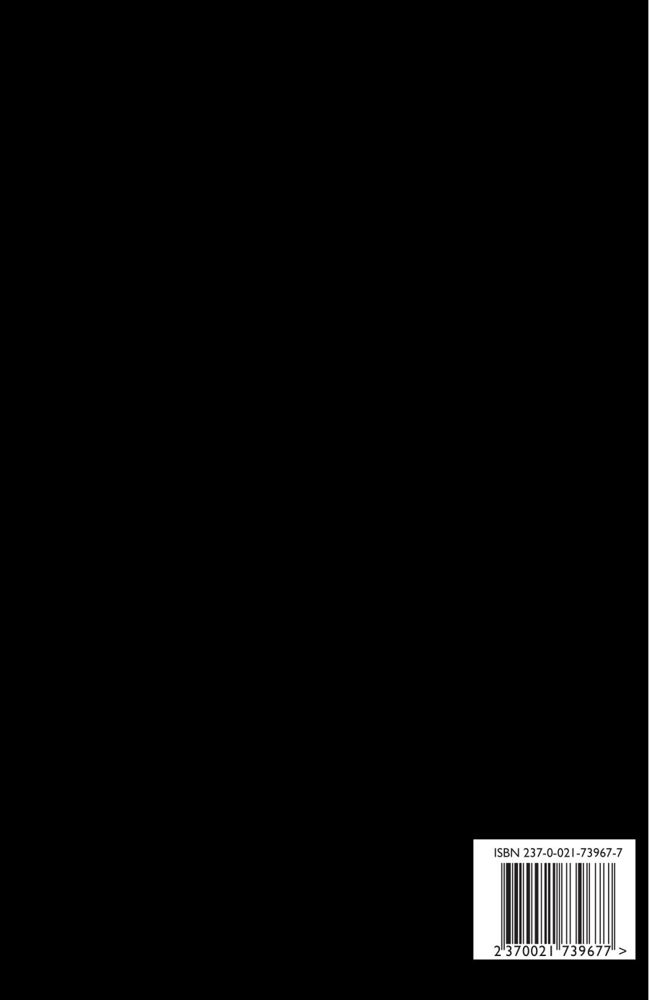

Les Fleurs du Mal (French)
Charles Baudelaire
6"x9" paperback, 260 pages
Oh, je voudrais tant que tu te souviennes
Des jours heureux où nous étions amis
En ce temps-là, la vie était plus belle
Et le soleil plus brûlant qu'aujourd'hui
Les feuilles mortes se ramassent à la pelle
Tu vois, je n'ai pas oublié
Les feuilles mortes se ramassent à la pelle
Les souvenirs et les regrets aussi
- Jacques Prévert et Joseph Kosma
This is a no-frills French-only version of Charles Baudelaire’s classic Les Fleurs du Mal, containing French language versions of all the poems included in the 1868 version.